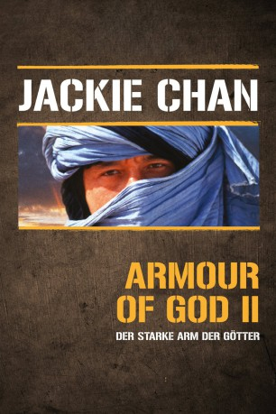

#2051 Mission Adler - Der starke Arm der Götter
Alternativ: Armour of God 2: Operation Condor (Englischer Titel)
 
 IMDB-Wertung: 7.3 / 10
IMDB-Wertung: 7.3 / 10  Metascore: 0
Metascore: 0 
Der Abenteurer Jackie bekommt von einem spanischen Herzog den Auftrag, einen Goldschatz zu finden, den die Deutschen im Zweiten Weltkrieg in der Wüste zurücklassen mussten. Gemeinsam mit der Expertin Ada und Elsa, der Enkelin des deutschen Kommandeurs, bricht er auf. Schnell kommt es zu Turbulenzen: Zwei Araber und eine mysteriöse Karawane sind ebenfalls hinter dem Schatz her. Mit Hilfe der ortskundigen Momoko finden sie das deutsche Lager. Dort tritt Adolf auf den Plan, der einzige Überlebende der damaligen Gold-Operation. Doch seine Söldner wollen den Reichtum für sich…
Jahr: 1991
Dauer: 80 Minuten
FSK: 16
Land: Hong-Kong Studio: Laser ParadiseTonspuren:
Untertitel:
Auflösung: 1080p (1920x816) Größe: 8140 MB
Genre: Action, Thriller, Komödie, Abenteuer, Krimi
Regisseur:  Jackie Chan
Jackie Chan
Drehbuch: Jackie Chan, Edward Tang
Soundtrack: Chris Babida, Stephen Endelman, Paul Rabjohns
Darsteller:
 Jackie Chan als Asian Hawk / Condor / Jackie
Jackie Chan als Asian Hawk / Condor / Jackie Aldo Sambrell als Adolf
Aldo Sambrell als Adolf- Vincent Lyn als Mark / Adolf's Guard #3
 Winston Ellis als Adolf's Guard , uncredited
Winston Ellis als Adolf's Guard , uncredited- Carol 'Do Do' Cheng als Ada
- Eva Cobo als Elsa
- Shôko Ikeda als Momoko
- Ken Goodman als Adolf's Guard #1
- Steve Tartalia als Adolf's Guard #2
- Bruce Fontaine als Adolf's Guard #4
- Wayne Archer als Adolf's Guard #5
- Brandon Charles als Adolf's Guard #6
 Ken Lo als Adolf's Guard #7
Ken Lo als Adolf's Guard #7- Peter Klimenko als Adolf's Guard #8
- Christian Perrochaud als Adolf's Guard #9
- Jonathan Isgar als Tasza
- Daniel Mintz als Amon
- Bozidar Smiljanic als Baron Bannon / Duke Scapio
- Mark King als Duke's Guard #1
- Bryan Baker als Duke's Guard #2
- Charles Yeomans als Man with Stolen Clothes
 Bridget Hoffman als Ada
Bridget Hoffman als Ada- Hui-Kuang Lu als
- Nick Brandon als John , uncredited
- Chi-Hwa Chen als Amazon Tribe Chief's Husband , uncredited
- Wan Faat als Extra , uncredited
- Keung-Kuen Lai als Extra , uncredited
 Mars als Extra , uncredited
Mars als Extra , uncredited
Datei: X:\HD-Eastern-Collections\Jackie Chan\Arm der Götter\Mission Adler - Der starke Arm der Götter (1991, FSK16, 1920x816).mkv seit 29.09.2015
Festplatte: HD Eastern+Western
 Es gibt insgesamt 58 Filme in der Gruppe 'HD-Eastern-Collections\Jackie Chan'
Es gibt insgesamt 58 Filme in der Gruppe 'HD-Eastern-Collections\Jackie Chan'